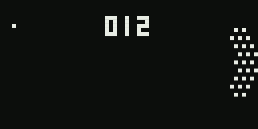

Space Battle
Arthur Hand · DREAMER no. 4 (1980-12) p. 12 1K RAM

Three fighters face a fleet of 25 enemy ships, with unlimited rockets fired one at a time from one of your two launchers. Enemy rockets leave hyperspace and can wrap from the bottom of the screen to the top. Each hit is worth 4 points and the score appears when one side is wiped out.
Keys
0 up, C down, F fire.
Files
| File | Version | Load | Run |
|---|---|---|---|
| Space Battle.c8 | main | 0200-03DF | C000 |
Listing as transcribed (with notes): space_battle.txt
Source
DREAMER no. 4 on archive.org, p. 12 (PDF page 12). Author: Arthur Hand.
Corrections applied
None.
Open doubts
- 0300 = 00B0 kept as printed (CHIPOS never calls machine code with a zero high byte, so it acts as a no-op).